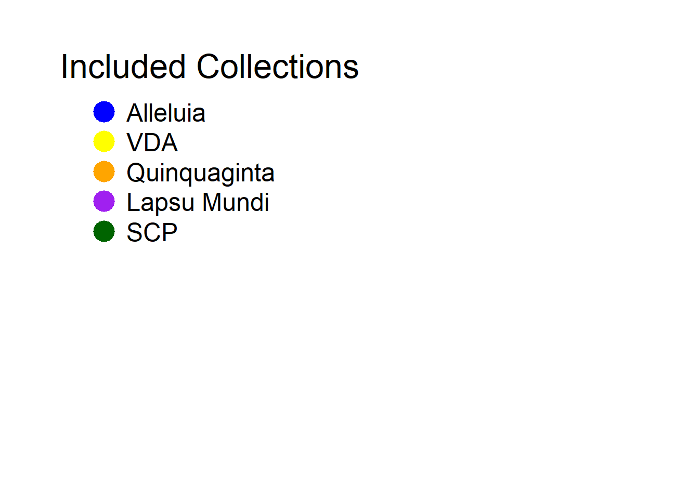

EDA and visualisation
2026-09-21
1 EDA
1.0.1 Missing data choices
The manuscripts with unknown dates or unknown “waves” are removed from the dataset, until further notice.
The data is undirected. Because the directed data assumes that the compiler was only able to choice (agency) a succession of sermons, se1 -> se2 -> se3, but he/she compiles [se1, se2, se3] with knowledge of all three sermons.
## # A tibble: 5 × 6
## Source Target manuscript century Directed Id
## <chr> <chr> <chr> <dbl> <chr> <dbl>
## 1 se-230 se-114 Roma, Biblioteca Nazionale Centrale Vitt… 5 undirec… 0
## 2 se-247 se-114 Roma, Biblioteca Nazionale Centrale Vitt… 5 undirec… 1
## 3 se-247 se-230 Roma, Biblioteca Nazionale Centrale Vitt… 5 undirec… 2
## 4 se-392 se-114 Roma, Biblioteca Nazionale Centrale Vitt… 5 undirec… 3
## 5 se-392 se-230 Roma, Biblioteca Nazionale Centrale Vitt… 5 undirec… 4## # A tibble: 5 × 58
## Id alleluia alleluia_spring alleluia_easter alleluia_mixed
## <chr> <dbl> <dbl> <dbl> <dbl>
## 1 se-1 1 0 0 0
## 2 se-10 0 0 0 0
## 3 se-100 0 0 0 0
## 4 se-101 0 0 0 0
## 5 se-102 0 0 0 0
## # ℹ 53 more variables: `alleluia_mixed?` <dbl>, alleluia_after_425 <dbl>,
## # bobbio_II <dbl>, bobbio_III <dbl>, bobbio <dbl>, coniugali <dbl>,
## # bruxelles <dbl>, brux_paen <dbl>, brux_coniugali <dbl>, brux_allel <dbl>,
## # brux_cluny <dbl>, campanienne <dbl>, camp_monte <dbl>, camp_napels <dbl>,
## # carthusienne <dbl>, cluny <dbl>, colbertine <dbl>, bardi <dbl>,
## # bardi_I <dbl>, bardi_II <dbl>, bardi_III <dbl>, bardi_IV <dbl>,
## # bardi_V <dbl>, carnis <dbl>, diversis <dbl>, erfurt <dbl>, eremo <dbl>, …1.1 Transpose to igraph
## [1] "name" "alleluia" "alleluia_spring"
## [4] "alleluia_easter" "alleluia_mixed" "alleluia_mixed?"
## [7] "alleluia_after_425" "bobbio_II" "bobbio_III"
## [10] "bobbio" "coniugali" "bruxelles"
## [13] "brux_paen" "brux_coniugali" "brux_allel"
## [16] "brux_cluny" "campanienne" "camp_monte"
## [19] "camp_napels" "carthusienne" "cluny"
## [22] "colbertine" "bardi" "bardi_I"
## [25] "bardi_II" "bardi_III" "bardi_IV"
## [28] "bardi_V" "carnis" "diversis"
## [31] "erfurt" "eremo" "gallicana"
## [34] "germanica" "lapsu" "lorsch"
## [37] "lyon" "mainz" "marmoutier"
## [40] "paenitentia" "diaconus" "diaconus_wint"
## [43] "diaconus_summ" "quattuor" "quinquaginta"
## [46] "scp" "scp_verbraken" "sessorienne"
## [49] "tripartite" "tripartite_I" "tripartite_II"
## [52] "tripartite_III" "vda" "vd_a"
## [55] "vd_b" "va_a" "va_b"
## [58] "wolfenbuettel"## [1] "manuscript" "century" "Directed" "Id"
1.2 Basic
# get n nodes (removed if degree = 0)
century_count <- function (g_full, cent) {
# slice graph
g_i <- subgraph.edges(
g,
E(g)[century == cent],
delete.vertices = T
)
n_unq_mss = length(unique(E(g_i)$manuscript))
# voeg een weight toe
E(g_i)$weight = 1
g_i <- simplify(g_i, edge.attr.comb = list(weight = "sum"))
# normalise weight
E(g_i)$weight <- E(g_i)$weight / max(E(g_i)$weight)
avg_edges <- if(n_unq_mss > 0) ecount(g_i) / n_unq_mss else 0
return(data.frame(
Century = cent,
Nodes = vcount(g_i),
Manuscripts = n_unq_mss,
Edges = ecount(g_i),
Avg_Edge_Per_MS = avg_edges,
Degree = igraph::mean_degree(g_i),
Transitivity = igraph::transitivity(g_i, type = "global"),
Density = igraph::edge_density(g_i),
stringsAsFactors = FALSE
))
}
# Size
# number of nodes
vcount(g)## [1] 588# number of edges
ecount(g)## [1] 791802centuries <- unique(E(g)$century)
df_results <- do.call(rbind, lapply(centuries, function(c) {
century_count(g_full = g, cent = c)
}))
knitr::kable(df_results)| Century | Nodes | Manuscripts | Edges | Avg_Edge_Per_MS | Degree | Transitivity | Density |
|---|---|---|---|---|---|---|---|
| 5 | 4 | 1 | 6 | 6.00000 | 3.00000 | 1.0000000 | 1.0000000 |
| 6 | 38 | 3 | 332 | 110.66667 | 17.47368 | 1.0000000 | 0.4722617 |
| 7 | 55 | 6 | 680 | 113.33333 | 24.72727 | 0.9577109 | 0.4579125 |
| 8 | 107 | 17 | 1695 | 99.70588 | 31.68224 | 0.9053726 | 0.2988891 |
| 9 | 359 | 104 | 10412 | 100.11538 | 58.00557 | 0.7616285 | 0.1620267 |
| 10 | 267 | 51 | 7530 | 147.64706 | 56.40449 | 0.7963437 | 0.2120470 |
| 11 | 366 | 202 | 11811 | 58.47030 | 64.54098 | 0.7298697 | 0.1768246 |
| 12 | 455 | 426 | 30466 | 71.51643 | 133.91648 | 0.6899333 | 0.2949702 |
| 13 | 357 | 175 | 26766 | 152.94857 | 149.94958 | 0.8824093 | 0.4212067 |
| 14 | 397 | 155 | 49634 | 320.21935 | 250.04534 | 0.9468225 | 0.6314276 |
| 15 | 378 | 393 | 39804 | 101.28244 | 210.60317 | 0.8522012 | 0.5586291 |
| 16 | 196 | 12 | 6937 | 578.08333 | 70.78571 | 0.8678697 | 0.3630037 |
sf_se_data |>
mutate(century_str = fct_relevel(as.character(century),
as.character(seq(4, 16))
)) %>%
ggplot(aes(x = century, y=n_ses)) +
geom_smooth() +
labs(x = "Century",
y = "ses/ms (log)",
title = "Number of authentic Augustinian sermons per manuscript",
subtitle = "Centain sermons with an attributed century") +
scale_y_log10() +
theme_minimal()## `geom_smooth()` using method = 'gam' and formula = 'y ~ s(x, bs = "cs")'
se_edge |>
distinct(century, manuscript) |>
mutate(century_str = fct_relevel(as.character(century),
as.character(seq(4, 16))
)) |>
group_by(century_str) |>
summarise(mss = n()) |>
as.data.frame() |>
ggplot(aes(x=century_str, y = mss)) +
geom_col() +
theme_minimal() +
labs(x='Century',
y = "N manuscripts",
title="Number of manuscripts per century")
1.2.1 Conclusion EDA
The number of observations should be more reliabile if it is higher than 50 obervations. In this case, only the 9th to the 15th century can be used for observation and the 5th to the 8th century can be redirected to my qualitative collegues. The 16th century is underrepresented in this dataset, because it only includes manuscripts, which saw a steady decline in production from the 16th century, as well as, discussion about the validity of church fathers within the Reformation debate, resulting in a lower production of augustinian sermons in manuscripts.
plot_alleluia_century <- function(g_full, cent, delete_non_nodes) {
# slice graph
G1 <- subgraph.edges(
g_full,
E(g_full)[century == cent],
delete.vertices = delete_non_nodes
)
# maak kleuren
colour_collection <- ifelse(
(V(G1)$lapsu == 1) & (cent >= 11),
"purple",
ifelse(V(G1)$alleluia == 1,
"blue",
ifelse(V(G1)$vda == 1, "yellow",
ifelse(V(G1)$quinquaginta == 1,
"orange",
ifelse((V(G1)$scp == 1) & (cent >= 12),
"darkgreen",
"lightgrey"
)))))
# layout
layout <- layout_with_mds(G1, dist = NULL, dim = 2)
# trek uit elkaar
layout <- norm_coords(layout, xmin = -75, xmax = 75, ymin = -50, ymax = 50)
#
# # node size degree
V(G1)$size <- betweenness(G1) / max(betweenness(G1)) * 800 + 250
# remove edges but keep layout
G1_edgeless = delete_edges(G1, edges=E(G1))
# plot century
p1 <- plot(G1_edgeless,
vertex.color = adjustcolor(colour_collection, alpha.f = 0.8),
vertex.label = NA,
layout=layout,
rescale=F
)
return (p1)
}
cents_early <- seq(9, 12)
cens_late <- seq(13, 15)
par(mfrow = c(2, 2), mar= c(1,1,1,1))
for (c in cents_early){
plot_alleluia_century(g_full=g, cent=c, delete_non_nodes=TRUE)
title(main = paste("Century:", c))
}
par(mfrow = c(2, 2), mar= c(1,1,1,1))
for (c in cens_late){
plot_alleluia_century(g_full=g, cent=c, delete_non_nodes=TRUE)
title(main = paste("Century:", c))
}
# to do:
# misschien geen ties
# alpha = 0.5
# belangrijke collecties toevoegen
# alleluia andere vorm
# plaatje plotten
# betweenness centrality
# standaard -> legend apart, nu niet.
# global clustering coefficent ~ century ### Clustering coefitient The structure of the networks change over the
centuries. In the graph, the centuries after the 12th century display
stronger clustering. This can be tested with a global transitivity
score, which can be seen in the next plot.
### Clustering coefitient The structure of the networks change over the
centuries. In the graph, the centuries after the 12th century display
stronger clustering. This can be tested with a global transitivity
score, which can be seen in the next plot.
df_results |>
filter(Century %in% seq(8, 15)) |>
ggplot(aes(Century, Transitivity)) +
geom_col() +
theme_minimal() +
labs(title = "Clustering coefficient per century",
x = "Century",
y = "Clustering coefficient") ###
###
sf_se_analysis <- sf_se_data |>
filter(century %in% seq(8, 15))
sf_se_analysis |>
filter(n_ses < 100) |>
ggplot(aes(x = n_ses, fill=as.character(century))) +
geom_histogram(binwidth = 1) +
theme_minimal() +
scale_y_log10() +
facet_wrap(vars(century))
for (c in unique(sf_se_analysis$century)){
df <- sf_se_analysis |>
filter(century == c)
tibble(Degree = 1:max(df$n_ses), Count = tabulate(df$n_ses))
degree_dist = tibble(Degree = 1:max(df$n_ses), Count = tabulate(df$n_ses))
degree_dist = degree_dist %>% mutate(Density = Count / sum(Count)) %>% filter(Density > 0)
model = lm(log(Density) ~ log(Degree), data = degree_dist)
print("Century:", str(c))
print(coef(model))
}## int 8
## [1] "Century:"
## (Intercept) log(Degree)
## -1.7538526 -0.5063932
## int 9
## [1] "Century:"
## (Intercept) log(Degree)
## -2.3073755 -0.7702862
## int 10
## [1] "Century:"
## (Intercept) log(Degree)
## -2.371427 -0.536236
## int 11
## [1] "Century:"
## (Intercept) log(Degree)
## -2.0231350 -0.9256692
## int 12
## [1] "Century:"
## (Intercept) log(Degree)
## -2.1350187 -0.9425769
## int 13
## [1] "Century:"
## (Intercept) log(Degree)
## -2.5799580 -0.7403172
## int 14
## [1] "Century:"
## (Intercept) log(Degree)
## -2.7438789 -0.6269846
## int 15
## [1] "Century:"
## (Intercept) log(Degree)
## -2.7256372 -0.83345331.2.2 Type of Collection per century
-> TODO: preek matrix | per century | kleurtjes per subcollectie | Freq Ms